Context
Types gives the page a specific angle instead of repeating the navigation label.
Systems / 01
Systems opens as a clear engineering decision hub: what Core offers, who it helps, why it matters, and which route to take first.
The first screen combines positioning, proof, primary action, and fast internal navigation, so people can act immediately or compare the rest of the systems route with context.
Red-rule technical hero
Select the closest route and Core keeps the next step, proof, and follow-up expectation aligned with reliability and standards.
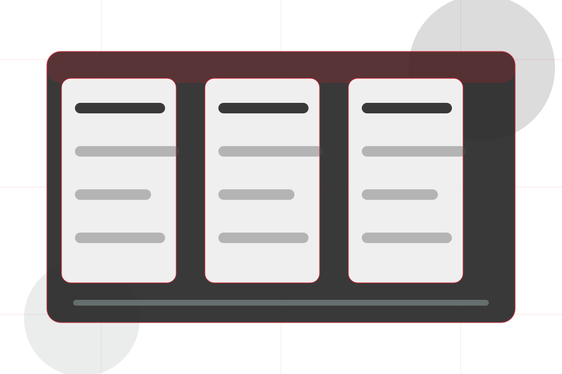
Systems / 02
Types adds technical context to the systems route, using the engineering project journal structure to support reliability and standards before visitors choose a next step.
Core uses engineering proof cards and focused copy to make the decision easier to scan, aligning the section with reliability and standards rather than filling space.
Explore Systems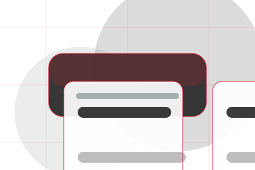
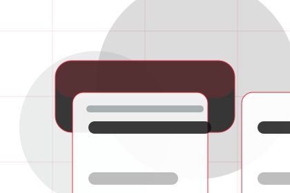
Types gives the page a specific angle instead of repeating the navigation label.
Systems / 03
Mechanical adds technical context to the systems route, using the engineering project journal structure to support reliability and standards before visitors choose a next step.
Core uses engineering proof cards and focused copy to make the decision easier to scan, aligning the section with reliability and standards rather than filling space.
Explore SystemsMechanical gives the page a specific angle instead of repeating the navigation label.
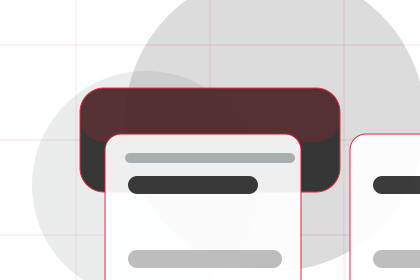
The engineering proof cards show what to compare, what to avoid, and what matters most for engineering, technical systems & specialist services visitors.
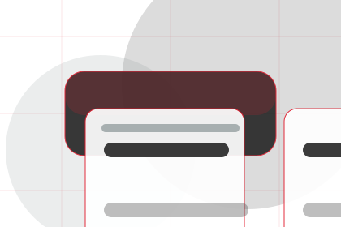
The final cue points to a useful internal route so the section keeps the journey moving.
Systems / 04
Electrical adds technical context to the systems route, using the engineering project journal structure to support reliability and standards before visitors choose a next step.
Core uses engineering proof cards and focused copy to make the decision easier to scan, aligning the section with reliability and standards rather than filling space.
Explore SystemsElectrical gives the page a specific angle instead of repeating the navigation label.
The engineering proof cards show what to compare, what to avoid, and what matters most for engineering, technical systems & specialist services visitors.
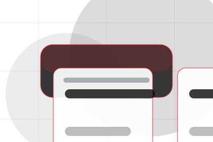
The final cue points to a useful internal route so the section keeps the journey moving.
Systems / 05
Control adds technical context to the systems route, using the engineering project journal structure to support reliability and standards before visitors choose a next step.
Core uses engineering proof cards and focused copy to make the decision easier to scan, aligning the section with reliability and standards rather than filling space.
Explore SystemsControl gives the page a specific angle instead of repeating the navigation label.
The engineering proof cards show what to compare, what to avoid, and what matters most for engineering, technical systems & specialist services visitors.
The final cue points to a useful internal route so the section keeps the journey moving.
Systems / 06
Integration adds technical context to the systems route, using the engineering project journal structure to support reliability and standards before visitors choose a next step.
Core uses engineering proof cards and focused copy to make the decision easier to scan, aligning the section with reliability and standards rather than filling space.
Explore SystemsIntegration gives the page a specific angle instead of repeating the navigation label.
The engineering proof cards show what to compare, what to avoid, and what matters most for engineering, technical systems & specialist services visitors.
The final cue points to a useful internal route so the section keeps the journey moving.
Systems / 07
Monitoring adds technical context to the systems route, using the engineering project journal structure to support reliability and standards before visitors choose a next step.
Core uses engineering proof cards and focused copy to make the decision easier to scan, aligning the section with reliability and standards rather than filling space.
Explore Systems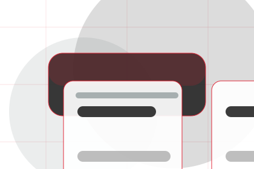
Monitoring gives the page a specific angle instead of repeating the navigation label.
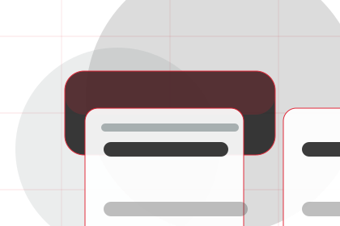
The engineering proof cards show what to compare, what to avoid, and what matters most for engineering, technical systems & specialist services visitors.
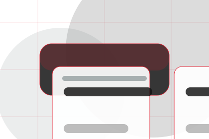
The final cue points to a useful internal route so the section keeps the journey moving.
Systems / 08
Documents gives researching visitors a practical route into guides, checklists, and comparison material without leaving the site structure.
Each resource behaves like a useful internal link, giving cold and warm visitors a way to learn, compare, and return to the action path.
Explore SystemsA useful entry point for visitors who need more context before they ask an engineer.
A scannable comparison aid that makes research usable before the next decision.
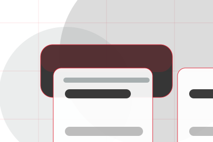
A route back to support, services, or contact when the visitor is ready to act.
Systems / 09
Reliability shows what changes after the work: clearer decisions, visible progress, and proof points that connect the offer to real outcomes.
The layout connects before-and-after thinking with measured outcomes, making the result easy to scan without promising what the business cannot guarantee.
Explore SystemsThe uncertainty, delay, or missed opportunity visitors bring into reliability.
The clearer, safer, or more valuable state Core is designed to support.
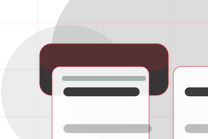
The visible cue that connects reliability to a believable decision, not a loose claim.
Systems / 10
Core closes the systems route with a clear action, a quick reminder of the value, and a low-friction way to ask an engineer.
Visitors who are ready can use the primary action. Visitors who are still comparing can scan the section links, proof, and support routes before they ask an engineer.
Ask EngineerThe final block keeps the choice simple: act now, compare one more proof route, or send enough detail for a focused response.
Ask Engineerreliability and standards
An engineering authority site with editorial project blocks, red rules, technical proof, and expert enquiry. Systems ends with a direct path to ask an engineer, plus enough context for visitors who still need to compare.
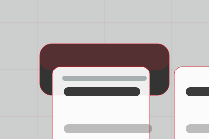
Ask Engineer